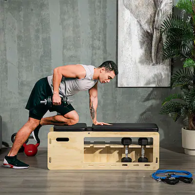
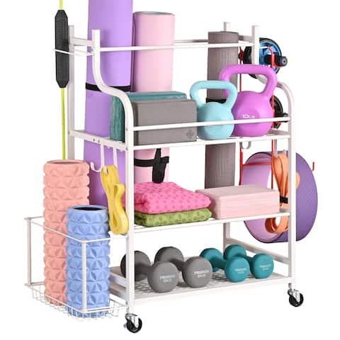
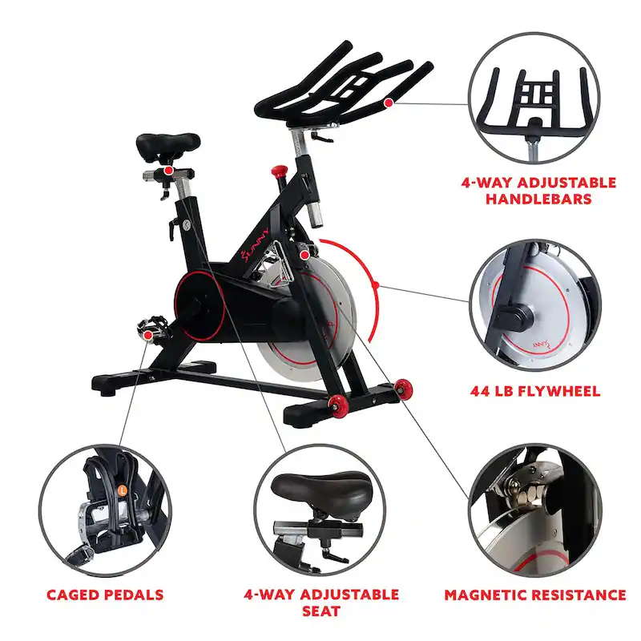

Our Products

Soozier Adjustable Weight Bench with Rack for Dumbbells & Storage, Workout Bench Home Gym Storage Rack
Descriptions:Storage is everything when you need to save space, especially if you want to keep a larger number of items in your home gym, or if you're working with limited extra room. A dumbbell rack and a 20 L cube compartment provide a generous capacity for plenty of stuff. Easy adjustment makes the set-up of this Soozier design fast, so you can adapt it to your needs effortlessly. Preserve your energy for the workout. Merge comfort and convenience with this lifting bench.
Product Features:
- Adjust the seat anywhere from 90° to flat and reset the angle of the incline easily
- Includes resistance bands, popular workout tools that can train a wide variety of muscles, and can be hooked onto the slots in the front
- Comfortable cushy padding enhances the workout experience
- Suitable for any personal workout space
- Maximum load 264 lbs., assembly required
Specification:
- Color: Natural
- Material: Beech, PU
- Overall Dimensions: 43.25" L x 13.75" W x 17"-42.25" H
- Seat Dimensions: 13" L x 13" W
- Backrest Dimensions: 26.5" L x 13" W
- Backrest Adjustable Angle: 90°, 110°, 125°, 145°, 165°, 180°
- Lower Storage Box Dimensions: 10.75" L x 10.75" W
- Dumbbell Rack Height: 9.75''
- Weight Capacity: 264 lbs.
- Custom Label: A91-243V00ND
New

Yoga Mat Storage Racks,Home Gym Storage Rack for Dumbbells Kettlebells Foam Roller, Workout Equipment Storage Organizer.
Keep your yoga equipment, dumbbells, kettlebells, foam roller, and other workout gear organized with this stylish storage rack. The three-tier design maximizes space and allows for easy access to your equipment. Made with high-quality powder-coated steel, this storage rack is sturdy and durable for long-term use. With 360-degree wheels, it can be easily moved to any location. Ideal for personal home gyms, fitness clubs, and studios
Features:
- Storage for various workout gear, including yoga mats, dumbbells, kettlebells, resistance bands, and more
- Sturdy and durable construction made with high-quality powder-coated steel
- Equipped with heavy-duty casters for easy movement indoors and outdoors
- Large capacity with 3 layers of metal mesh, a side basket, 3-sectional iron holder, and hanging hooks
- Suitable for use in gyms and fitness studios to keep equipment organized and tidy
- Ideal for garage storage with ample space for all your sports equipment

Sunny Health & Fitness Magnetic Belt Drive Indoor Cycling Bike
Get ready to take your fitness routine to the next level with the Sunny Health & Fitness Magnetic Belt Drive Indoor Cycling Bike. This high-intensity cardio machine supports multi-hand grips and high-interval training, allowing you to push yourself to become stronger and better. The magnetic resistance system provides an unbelievably smooth and nearly silent ride, while the heavy-duty 44 lb flywheel promotes improved physical and strength training. With customizable seat and handlebar adjustments, adjustable strap pedals, and a device holder for your phone or tablet, this bike is designed for a comfortable and convenient workout experience. Plus, its durable steel frame can support up to 300 lb. Maximize your fitness routine with the SF-B1805 Magnetic Indoor Cycling Bike by Sunny Health and Fitness.
Features:
- Storage for various workout gear, including yoga mats, dumbbells, kettlebells, resistance bands, and more
- Sturdy and durable construction made with high-quality powder-coated steel
- Equipped with heavy-duty casters for easy movement indoors and outdoors
- Large capacity with 3 layers of metal mesh, a side basket, 3-sectional iron holder, and hanging hooks
- Suitable for use in gyms and fitness studios to keep equipment organized and tidy
- Ideal for garage storage with ample space for all your sports equipment